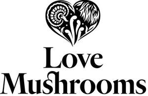

Trade Mark Journal No.2025/031 1 August 2025
UK00004235349 17 July 2025 (9,10,11,35,42)
Mark 1

Mark 2
- Class 9
- Intelligent gateways for communication; mobile apps; recorded content; recorded media; media content; computer software; computer software applications; computer software platforms; audio and audio-visual recordings; pre-recorded videos; electronic publications; podcasts; downloadable publications; parts and fittings for the aforesaid goods.
- Class 10
- Massage apparatus, electric or non-electric; therapeutic facial masks; power operated skin care apparatus; cosmetic apparatus, namely power-operated skin care machines for the treatment of skin conditions, skin cleaning, dermabrasion and skin exfoliation, namely, electronic light therapy devices featuring LED lights for treatment of skin; parts and fittings for the aforesaid goods.
- Class 11
- LED light bulbs; lighting apparatus and installations; light bulbs; parts and fittings for the aforesaid goods.
- Class 35
- Advertising, marketing and sales promotions; online ordering services; retail services and wholesale services connected with the sale of intelligent gateways for communication, mobile apps, recorded content, recorded media, media content, computer software, computer software applications, computer software platforms, audio and audio-visual recordings, pre-recorded videos, electronic publications, podcasts, downloadable publications, massage apparatus, electric or non-electric, therapeutic facial masks, power operated skin care apparatus, cosmetic apparatus, namely power-operated skin care machines for the treatment of skin conditions, skin cleaning, dermabrasion and skin exfoliation, namely, electronic light therapy devices featuring LED lights for treatment of skin, LED light bulbs, lighting apparatus and installations, light bulbs, bags, rucksacks, carryalls, sports bags, luggage, holdalls, wallets, purses, toilet bags, parts and fittings for the aforesaid goods, skin care preparations, make-up, moisturisers, body cleaning and beauty care preparations, cosmetics and cosmetic preparations, cosmetic kits, compacts containing make-up, sunscreen creams, hair treatment preparations, soaps and gels, shampoos, hair conditioners, perfumery and fragrances, nail polish, eyelashes, deodorants and antiperspirants, dentifrices and mouthwashes, aromatherapy oil, aromatic oils, aromatics, medicated skin and hair care preparations, medicated creams, medicated lip balm, pharmaceutical and natural remedies, dietary supplements and dietetic preparations, dietetic substances adapted for medical use, dietetic and nutritional supplements, dietetic confectionery, nutritional supplement energy bars, nutritional supplement meal replacement bars for boosting energy, vitamin fortified beverages, nutritional supplement drink mix, snack foods for dietetic use, medicinal oils, food and beverages, coffee, tea, cocoa, culinary herbs, herbal infusions, herbal honey, seasonings, sauces, chutneys and pastes, marinades, spices, sugar, tapioca, sago, artificial coffee, bakery goods, yeast, baking powder, rice, pasta, pizzas, pies and pasta dishes, spaghetti and spaghetti-based dishes, rice-based dishes, flour and preparations made from cereals, bread, pastry, confectionery, ices, puddings, sandwiches, cereal and energy bars, cereals, biscuits, cakes, food mixtures consisting of cereal, grains and dried fruits, nut confectionery, coated nuts [confectionery], cereal based breakfast bars and snack bars, cereal breakfast foods, cereals and preparations made wholly or principally of cereals, all for human consumption, food mixtures consisting of cereal flakes and dried fruits, high-protein cereal bars, isotonic beverages, beverages containing vitamins, mineral and aerated waters, soft drinks, non- alcoholic drinks, fruit drinks and fruit juices, preserved, frozen, dried and cooked fruits, nuts and vegetables, vegetable crisps, meat, fish, poultry and game, meat extracts, jellies, jams, compotes, eggs, milk and milk products, edible oils and fats, prepared meals made of meat, fish, poultry, game, frozen, dried and cooked fruits, nuts and vegetables, soups, crisps, potato crisps, dried fruit, mixtures of nuts and dried fruits, dried tropical fruits, mixtures of seeds, food products made from dried fruits, nuts and processed seeds, prepared snacks for human consumption made from dried vegetables, fruit, nuts and processed seeds, edible, prepared and processed nuts, edible, prepared and processed seeds, snack bars and snack foods made from dried fruits, nuts and processed seeds, fruits, potatoes, vegetables, coconut, milk, legumes and tofu, seed bars, raw and unprocessed agricultural, aquacultural, horticultural and forestry products, raw and unprocessed grains and seeds, unprocessed rice, fresh fruits and vegetables, fresh herbs, natural plants and flowers, foodstuffs for animals, manicure sets, pedicure sets, scissors, hand tools and implements (hand operated), nail buffers for use in manicure, pedicure implements, manicure implements, fingernail files, hair styling appliances, tableware, cookware and containers, cosmetic and toilet utensils, household or kitchen utensils and containers, cups and mugs, glasses, drinking vessels and barware, glassware, crockery, sponges, brushes, combs, toothbrushes, clothing, footwear, headgear; consultancy, information and advisory services relating to all the aforesaid services.
- Class 42
- Scientific and technological services; design services; computer consultancy; computer and computer software design services; computer programming; computer software installation; computer consultancy services; maintaining databases; electronic storage of digital media; hosting of digital content; providing temporary use of non- downloadable and web-based computer software; Software as a service (SAAS); Platform as a service (PAAS); blockchain as a service (BAAS); design consultancy; information, consultancy and advisory services relating to all the aforesaid services.
Love Mushrooms Ltd
Representative: Trademark Eagle Limited